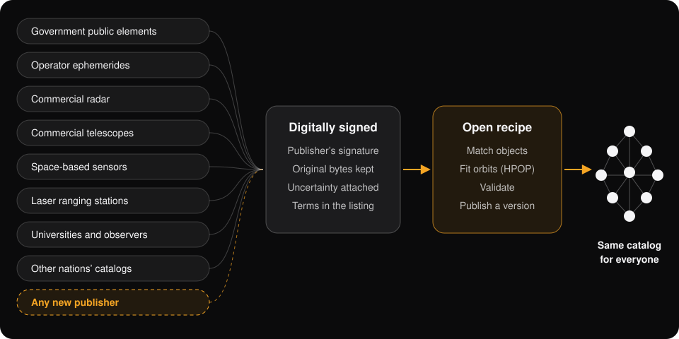

An open network for space traffic management
Space Data Network
An open, decentralized, censorship-resistant network for space data, software, and services.
Digitally signed and optionally encrypted. Built on open standards, software, and algorithms.
Why it matters
Data Infrastructure Hasn’t Kept Up With The Growing Space Economy
Every satellite owner-operator needs timely access to vital data, including what is coming close. How well that works comes down to three things: how the data is organized, how fast it moves and whether it can be trusted.
Organization
TodayOrbit data is spread across many websites, each with its own login and its own kind of file.
On the networkOne open standard that any software can read, on one network every source can publish to.
Speed
TodayEveryone downloads the same big files, again and again, every time they change.
On the networkEach update is published once and passed from node to node.
Security and attribution
TodayFiles move from system to system with nothing to prove who made them or that nobody changed them.
On the networkEvery record is digitally signed by its source and checked by every node. Sold data opens only for the buyer.
What the network is
One Shared Catalog, Built From Every Source
No single tracking network sees everything in orbit. The network combines every source into one catalog, keeps each record digitally signed by whoever produced it, and shows how each result was reached.

Any source can contribute
Radars, telescopes, satellite operators, universities and other nations. Anyone can publish, free or for sale.
Every record has a source
Digitally signed by whoever produced it, kept exactly as published, with its margin of error whenever the source gives one.
Results anyone can check
Each version of the catalog lists its inputs and method. Anyone can rerun it and get the same answer.
Censorship resistant
No central server or gatekeeper. Records pass from node to node, so no single party can remove them, alter them unnoticed, or shut a publisher out.
For your organization
Four Ways To Join The Network
Start in a web browser at SpaceAware.io, the network’s portal, with nothing to install. To put your organization on the network, install the free network software, called a node, on a computer or server you control. Each step keeps everything from the one before.
-
1
Nothing to install
Use the portal
At SpaceAware.io, see every tracked object, follow live updates and run orbit analysis in your browser. Every record shows who produced it.
Open SpaceAware.io → -
2
Install a node
Put your organization on the network
A node publishes who you are, digitally signed, and holds your organization’s keys: one to sign what you publish, one to open data sent only to you. It works alongside your existing systems.
Identity and keys → -
3
Your node · your data
Publish your data
Share orbits, observations and warnings in open standard formats, digitally signed at the source. Give them away or sell them on your own terms.
Publish data → -
4
Always-on node
Offer software and services
Run analysis software and services that other operators use and pay for, and help carry the network’s traffic.
What you can host →
What you get
What The Network Gives You
Digitally signed at the source
Every record carries its publisher’s digital signature, checked before your node stores it, over encrypted connections.
Security and identity →No central server
Nodes find each other and trade data directly. No single owner can switch the catalog off.
How the network works →A storefront with no middlemen
Publish free or sell straight from your node. Terms sit in a digitally signed listing anyone can read.
Modules and commerce →Private collision checks
Check a planned maneuver against everyone else’s orbits without revealing your plans to a competitor.
How private checks work →One combined catalog
Built from every provider and versioned. Each orbit keeps its source, the evidence behind it and its margin of error.
How catalogs are built →For data and software providers
What You Can Offer On The Network
Your node can offer three kinds of things, free or for sale. Each is digitally signed, so everyone knows who published it.
Data
Orbits, observations, collision warnings, radio-frequency and space-weather data in open standard formats. Stream it live or publish whole datasets, copied across the network.
Publish data →Software
Analysis tools such as orbit prediction and collision checks. The same software runs in a web browser or on any node, and is delivered encrypted when sold.
Software and the storefront →Services
Work your node does for others, such as collision screening or orbit fitting. List it in the storefront and anyone on the network can request it.
Offer a service →Trust
Knowing Whose Data To Trust
Every publisher signs with a digital key. Adversarial security shows whether that key is still safe by tying it to money anyone can see.
One key, two jobs
The key that signs a node’s records also controls cryptocurrency accounts. Identity and value share one key.
Value as a bond
The owner deposits funds in those accounts, and anyone who relies on the source can add more to raise the stakes.
Attackers prove the point
Whoever steals the private key can take the funds instantly and anonymously, so they will. Funds that stay put mean the key has not been stolen.
Checked continuously
Balances are public and update continuously: a live signal anyone can check, instead of taking a certificate on trust. Each node decides whose data it accepts.
v1.0.5-beta.70
Install The Network Software
Desktop app
Easiest. Installs a node and opens its dashboard.
macOS
Windows
Terminal
Installs the node as a background service.
curl -fsSL https://spacedatanetwork.org/install.sh | bashirm https://spacedatanetwork.org/install.ps1 | iexServer bundles
Docker
Identity and data live in the sdn-data volume.
docker run -d --name sdn --hostname sdn --restart unless-stopped \
-v sdn-data:/app/data \
-p 127.0.0.1:5001:5001 -p 4001:4001 -p 4001:4001/udp \
dockerdigitalarsenal/space-data-network:v1.0.5-beta.70Dashboard: http://127.0.0.1:5001/
Checksums: spacedatanetwork-checksums.txt · All releases